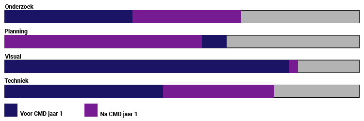

Welkom!
Hoi, en welkom op deze portfolio site voor Denise Mori, een propedeuse student van de opleiding Communicatie en Multimedia Design aan de Hogeschool van Amsterdam.
Ik ben 23 jaar, kom uit Utrecht en doe deze studie met veel plezier. Voor ik met deze studie begon heb ik mijn Mavo/VMBO-T diploma behaald in 2012 en ben ik begonnen aan een MBO-niveau 4 opleiding in Hilversum voor Animatie en Audiovisuele vormgeving. Deze studie heb ik met een beetje vertraging buiten mijn macht afgerond in November 2016. Hierna heb ik een jaar vrijwilligerswerk gedaan bij Beeld en Geluid als workshopbegeleider bij de YouTube Bootcamp voor hun YouTube tentoonstelling. Hierbij ging ik kinderen leren over hoe ze hun eerste YouTube video konden maken en ouders informeren over de leuke dingen maar ook de gevaren van het internet. Toen deze voorstelling voorbij was heb ik 1,5 jaar bij een supermarkt gewerkt als hoofdcassiere.
Inmiddels zijn we bij dit studiejaar aanbeland. Wat voor een CMD'er ben ik eigenlijk? Ik ben eigenlijk een beetje van alles en nog wat. Ik heb dit jaar zeker veel dingen geleerd over wat ik vooral niet moet doen. Ik moet onder anderen leren om dingen niet tot het laatste moment uit te stellen. Ook moet ik leren plannen. Het is niet dat ik niet kan plannen, maar ik moet er zeker meer gebruik van gaan maken om mijzelf rust te geven. Wel wist ik al van mezelf dat ik veel beter werk met dingen in de praktijk dan theorie, en dit klopt nog steeds. Ik ben gegroeid in het doen van onderzoek en het maken van goede aantekening, iets wat ik in eerste instantie een beetje onmogelijk vond.
Skills

Portfolio
Benieuwd naar wat ik dit jaar allemaal heb gedaan? bekijk hier mijn werk van dit jaar!